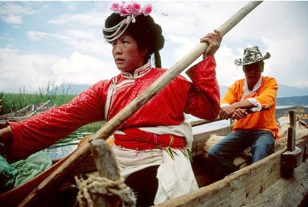
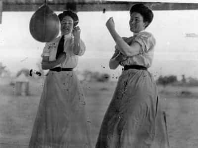

< < < Back
Cultural Marxism Produces Matriarchy – Return Of Kings
The perverse obsession with equality in the West is the attempt to temper the excesses of individualism by engineering a matriarchal mold of society. On RoK we often rail against the brutalised, narcissistic woman that this ideology is producing. Like the vulgar displays of wealth from the nouveau riche, newly-bestowed social entitlement has predisposed many women to flaunt their recent gains. It is difficult to blame them for doing this. Which is why, if the war is to be won, it is important to recognise that the battle of the sexes is now a battle of disparate political ideologies.
In the Marxist doctrine of equality, the logical endpoint is a matriarchy. If you observe some of the common features of female-dominated societies, social organisation is remarkably similar to Marx’s idea of a Socialist utopia, where shared property and loose family ties are a pre-requisite for greater communal participation. The next time a feminist sounds off about the patriarchy while expounding the virtues of her own entirely altruistic egalitarian philosophy, politely remind her that the Hopi Indians and the Mosuo of China are exemplars of her worldview in action; both are matriarchies.

Central Park boating lake C.2035
However, there is an elephant in the room. Eastern Europe has remained an outpost for masculinity in exile despite its being in thrall to Marxist principles for over fifty years. And why, in capitalist democracies, has the creeping rot of feminism and equality produced an enfeebled male population but an empowered female one? The answer, I believe, lies in the fact that whereas political Marxism in the Eastern satellites remained largely economic, in the West it has been manipulated primarily for social upheaval.
Marxism enacted economically worked to keep its population financially impoverished; enacted socially it has levelled out the difference between the sexes. The West has not yet capitulated to economic Marxism; when it does, it would be unsurprising if more traditional male-female roles were naturally reinstituted. In the absence of state social interference, there would be no affirmative action as a leg up. Each would be obliged to prove their worth in among the best of men.

Elephantiasis sufferer punished by frustrated women
Perhaps it is because Capitalism doesn’t ostensibly seek to regulate the social lives of its populace that a rogue ideology has filled the vacuum. At any rate, Marxism and the idea of female oppression go hand in hand, which is why for feminists it is an expedient and pseudo-credible ideology as an opportunistic means to further their lot while placing the blame squarely on a perceived oppressor: man.
Natural matriarchies such as the Mosuo prosper because men are inured to their servitude. In a socially-engineered matriarchy, which pockets of the West are well on their way to becoming, the organ of the state must increasingly regulate its citizens’ thoughts and speech for the ideology to prosper. Thus sexism and racism being the bête noire of modern Western discourse; any opinion which deviates from the egalitarian agenda endangers the precarious edifice of Marxism in action.
Since the cultural revolution of the 1960s Marxism and Feminism have joined forces to permeate every strata of society. That the former can still be taken seriously in light of the destruction each manifestation of its ideology has wrought is testament to the criminal naivety of mankind and remains the most damning modern indictment of our inability to learn the lessons of history. It may now be too late to stem the seeping wound that Western civilisation has inflicted upon itself. But if a last-ditch attempt is to be made, the jugular must be aimed for. Play them at their own game. Bypass the feminists and attack the root of the problem; push to criminalise Marxism in the same vein that fascism has been outlawed. If this is achieved, both insidious ideologies will be swept away in the carnage for good.
 If you like this article and are concerned about the future of the Western world, check out Roosh's book Free Speech Isn't Free. It gives an inside look to how the globalist establishment is attempting to marginalize masculine men with a leftist agenda that promotes censorship, feminism, and sterility. It also shares key knowledge and tools that you can use to defend yourself against social justice attacks. Click here to learn more about the book. Your support will help maintain our operation.
If you like this article and are concerned about the future of the Western world, check out Roosh's book Free Speech Isn't Free. It gives an inside look to how the globalist establishment is attempting to marginalize masculine men with a leftist agenda that promotes censorship, feminism, and sterility. It also shares key knowledge and tools that you can use to defend yourself against social justice attacks. Click here to learn more about the book. Your support will help maintain our operation.
Read More: Why We Need To Fight For The Patriarchy


{kind=link}
{kind=link}